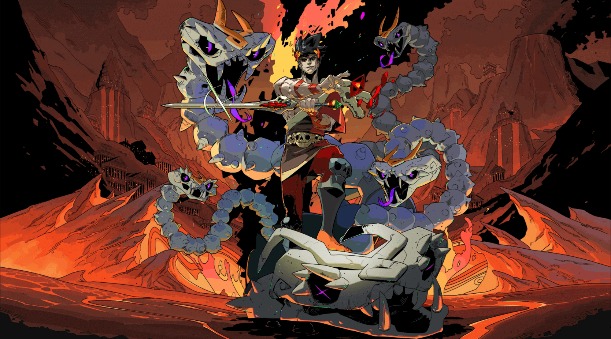
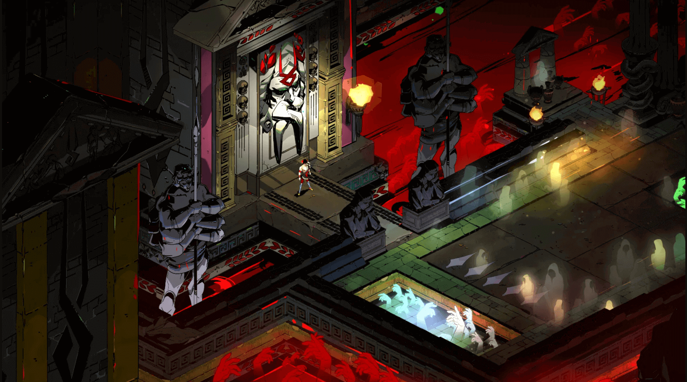
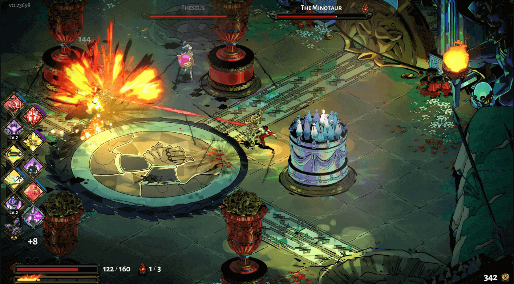
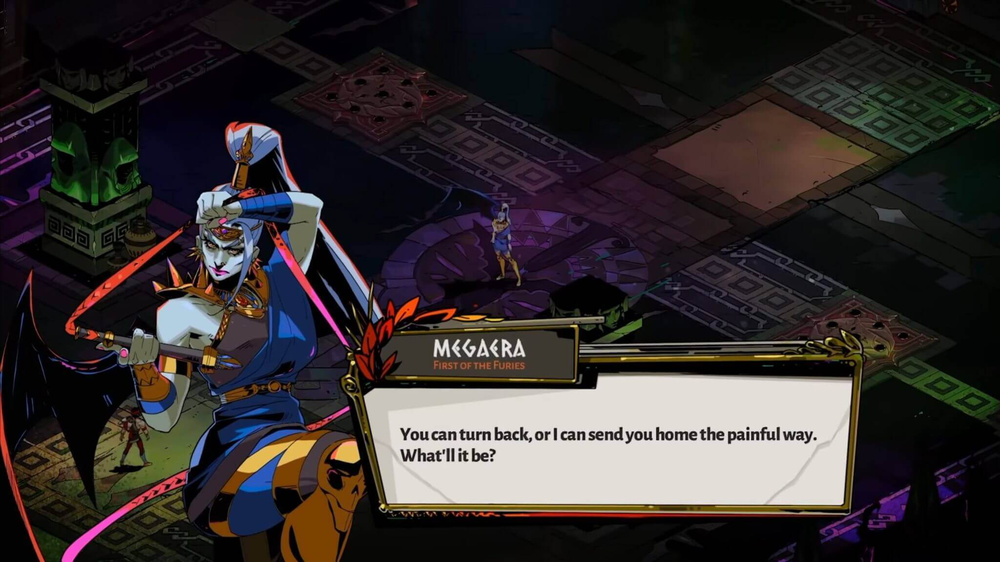
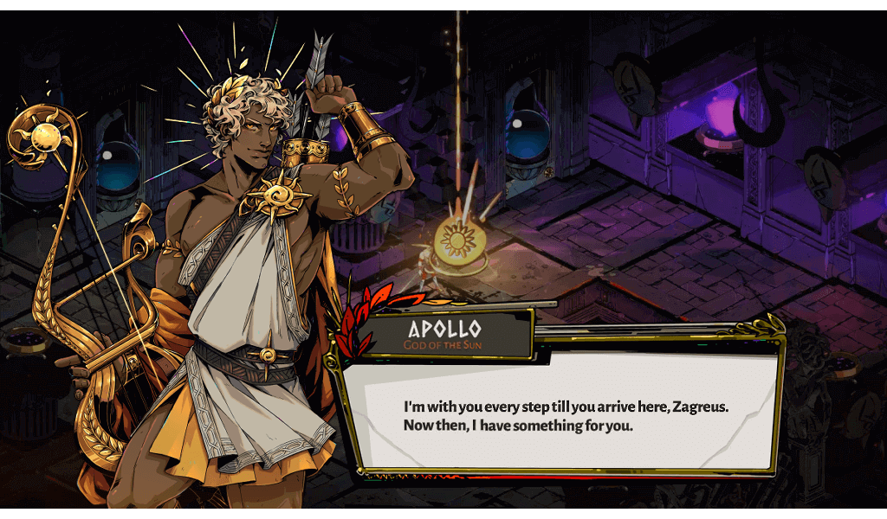

Hades

Aviso: Este análisis se ha hecho jugando solo la versión de PC
Una de las sorpresas del 2020, en lo personal, fue enterarme que un juego indie llamado Hades fue nominado a los GOTY en los Game Awards. Tengo que de admitir que nunca había escuchado del juego y me sorprendí bastante por su nominación, así que decidí darle una oportunidad y fue grata mi sorpresa que terminé convirtiéndome en una fan de Supergiant Games.
Trailer
La Mitología Griega Nunca Falla
Hades es un juego de rol de acción roguelike, no es el primero ni tampoco será el último juego en basarse en la mitología griega; sin embargo, este logra que dicha temática forme parte de su propia esencia.
El juego te presenta y te pone en el rol de Zagreo, el príncipe del inframundo, que está tratando de escapar del reino y de su padre Hades, para poder llegar al Monte Olimpo con el resto de dioses. A lo largo del juego, te vas a encontrar con personajes como Aquiles, Medusa, Orfeo, Cerbero, etc., que se encuentran en el Inframundo. De igual forma, podrás interactuar con los dioses del Monte Olimpo como Zeus, Poseìdon, Afrodita, entre otros personajes; que te otorgaran su ayuda para lograr escapar del territorio de Hades.
¿Es suficiente esto para el juego? No!. Este, además, se permite ampliar su propia temática sin dañar la esencia que te desarrolla a lo largo del mismo. Esto está evidenciado al mencionarse a un ángel que se rebeló, un rey reconocido por su arma, un general de la antigua China, un héroe nórdico, una deidad hinduista y un rey que buscaba la inmortalidad.

Harmas
En tu travesía por el juego, al escapar del Inframundo iniciarás con una espada, arma principal del personaje. Sin embargo, a medida de que tus intentos de escapar se vuelvan más frecuentes, podrás desbloquear más armas como un escudo, una lanza, un arco, un arma de fuego y unos guantes.
La particularidad no son las armas en sí, sino las combinaciones que podes ir descubriendo a lo largo de cada intento , esto gracias a que cada apoyo del Olímpo, conocido como bendición, te permitirà dar mejoras a las armas como daño adicional, causar daño crìtico, provocar daño continuo, entre otros. De no bastar con el apoyo de los dioses, estas armas tienen mejoras gracias a un objeto especial de Dédalo, ampliando mucho màs las combinaciones por cada intento de huida.

Habilidades y Objetos En Tu Aventura
Ya hablamos de las armas que se pueden elegir y como pueden mejorar; sin embargo, el juego te permite contar con algunas adiciones que te pueden ayudar en la travesía.
Por un lado, el personaje aparte de su ataque estándar podrá ejecutar un ataque especial (varía igual por arma), como lanzar un artefacto, hacer un dash y utilizar un llamamiento (poder final que varia de igual forma). De igual forma, hay habilidades que pueden adquirirse por las bendiciones que encuentras y que amplian un poco más el set de poderes que tendrás. Capacidades como mayor velocidad, rayos que atacan a los enemigos cuándo te dañan, reducción de daños, entre otros.
Por otro lado, el personaje podrá equiparse un objeto que también le ayudará en la travesía (pudiendo cambiarlo cuando se supera un nivel); sin embargo, estos objetos únicamente podrán obtenerse cuándo interactues lo suficiente con los personajes del Inframundo como del Monte Olímpo. Otros objetos como llaves, elixires, gemas, etc; te permitirán tener mejoras en tus habilidades y en las armas.

No Hay Un Solo Camino
Hades, al ser un juego de rol de acción roguelike, hará que cada pasillo por nivel que tengas que atravesar sea al azar, exceptuando claro está la pelea con cada jefe final de nivel.
Tu principal guía será los íconos en las puertas que te mostrarán los objetos, las bendiciones, la tienda o lugares de interacción. Eso sí, cada pasillo tendrá enemigos “estándar” al azar, puedes pelear con un minijefe por nivel, entrar en un área de descanso y visitar la tienda o interactuar con un personaje dependiendo del nivel.

De igual forma, podrás encontrar al azar cofres que te podrán proporcionar vida u objetos de mejora, pero estos están custodiados por enemigos que aparecerán sí decidís abrir el cofre, por lo que hay que pensar dos veces si lo que obtendrás será mayor al daño que podrías recibir.
Aparte de la tienda, en donde puedes adquirir habilidades pagando con las monedas que te encuentras, aparecerá de vez en cuando una fuente y una especie de cofre, los cuáles te permiten vender bendiciones que no necesites por oro y comprar objetos exclusivos que te ayudarán aún más, respectivamente..
La Narrativa y Los Diálogos
Lo que el juego cuenta podría resumirse en que Zagreo desea escapar del territorio de su padre Hades, pero la realidad es mucho más compleja. Por cada intento fallido irás descubriendo màs secretos en los mismos diálogos de los personajes; sin mencionar los hechos que te narran del porqué Zagreo decide escaparse en primer lugar, cuál es el rol que tenía en el Inframundo, qué consecuencias habría de un eventual escape, entre otros.
Ya que acabo de mencionar los diálogos, cumplen un factor también importante en la experiencia de juego. Saltearte un diálogo podría ser un error, especialmente si te enganchaste con la narrativa.
Los personajes reaccionan y dan una opiniòn ante el objeto y el arma que llevas equipados, las interacciones que has tenido con otros personajes, al saber que no lograste escapar o saber cuál enemigo te detuvo en tu intento de escape, entre otros.

No Me La Vi Venír
En un juego como Hades en dónde constantemente andas enfrentandote con enemigos y tu mente está enfocada en ver la mejor estrategia para lograr escapar y cumplir con tu meta, no esperas para nada encontrar un pasillo que rompe ese esquema.
Puedo decir con franquesa que mientras dejé de jugar por un momento, es que empecé a contemplar la música por su letra y su ritmo tan diferente a lo esperado. Este cambio brusco no se siente fuera de lugar para nada, sino más bien te genera curiosidad, al menos para mí.
Para jugarlo en PC encontralo en: